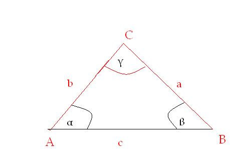
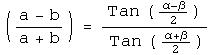
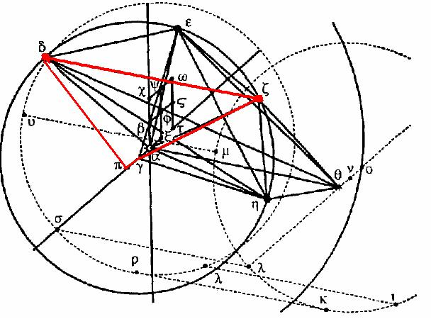
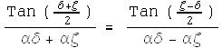
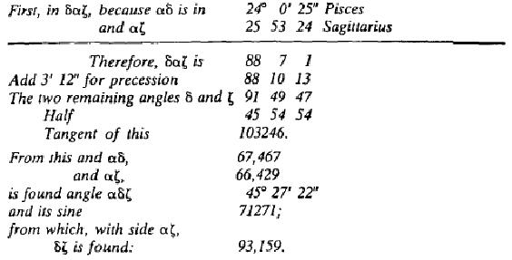

The example presented in the translator's introduction (p. 11) is sufficient to getting Kepler's "short cut," using the law of tangents, which is pulled directly from the problem faced in chapter 16 (pp. 260-261), nevertheless, I can present another example from chapter 26 (p.329) to make the point clearer.
First, the Law of tangents states:

| (a - b) | | Tan
| |
Since (180 - γ) = (α + β), this is called the supplement
So then,
...........But why?
Kepler simply describes how to use this algebraically:
.....But the tangents of the differences of the angles at the bases in this kind of triangle may be found if you divide the differences of the sides by the sums of the sides, and multiply the quotient by the tangents of the halves of the supplements. (p. 260)
Let us take the diagram and problem (p.327-328) that Kepler poses:
Let's get a closer look at that triangle:

Here is a circumstance, where you can not use the law of sines. Why not?
This is a case when you have one angle and its two sides. Can you find the different cases, for a triangle, in which you would need to use the different laws?
Kepler is stuck in the situation where he has to use his trigonometric “cheat sheet,” and can solve the problem of finding the angles and lengths for any triangle. Wait before you Wikipedia this! Take the problem that Kepler poses:
This I wanted to give as a foretaste to make up for coming labours. For now I shall follow the geometrical path to investigate the position of the apogee and the eccentricity. And since three points determine a circle, I am at first using the points δ, ζ, and η... Since the points δ, ζ, η are positions on a single circumference with the centre γ, the angle δηζ will be half of the angle δγζ and of its measure, the arc δζ. Therefore, the ratio of δζ to the radius δγ, and the eccentricity γα, will be given, together with the angle δαγ, because αγ lies in the direction of the apsides. But for the knowledge of the angle δ, ζ, η, we need to solve the three triangles. (p.328-329)
These three triangles Kepler is refering to are αδζ,
αηζ, δγα, but for the sake of brevity, let's find one triangle and you can apply the method to the other two triangles.
Using the law of tangents, we have:
| (αδ - αζ) | | Tan
| |
| (αδ - αζ) | | Tan
| |
or

Now what was given is:
δαζ (or α as Kepler puts it) is 88°10'13''
αδ is 67,467
αζ is 66,429
We need to find the length, δζ.
| (αδ - αζ) | | 0.00775
| |
Half of this is:
| (180° - α) | |||
| (αδ - αζ) | | Tan
| |
| (δ + ζ) | |||||||
| Tan |
| Multiply by | | , gives .00800 or 800 for Kepler
| |
| (ζ - δ) | |||||||
| So, Tan |
| (ζ - δ) | |||
| (ζ + δ) | |||||||
| We now know |
| (ζ - δ) | |||||||
| And |
| (ζ + δ) | | ζ + δ - ζ - (-δ)
| 2δ
| |
Therefore, αδζ = 45°27'18''.
| Sin(88°10'13'') |
Check out Kepler's table in Chapter 26, page 329:
